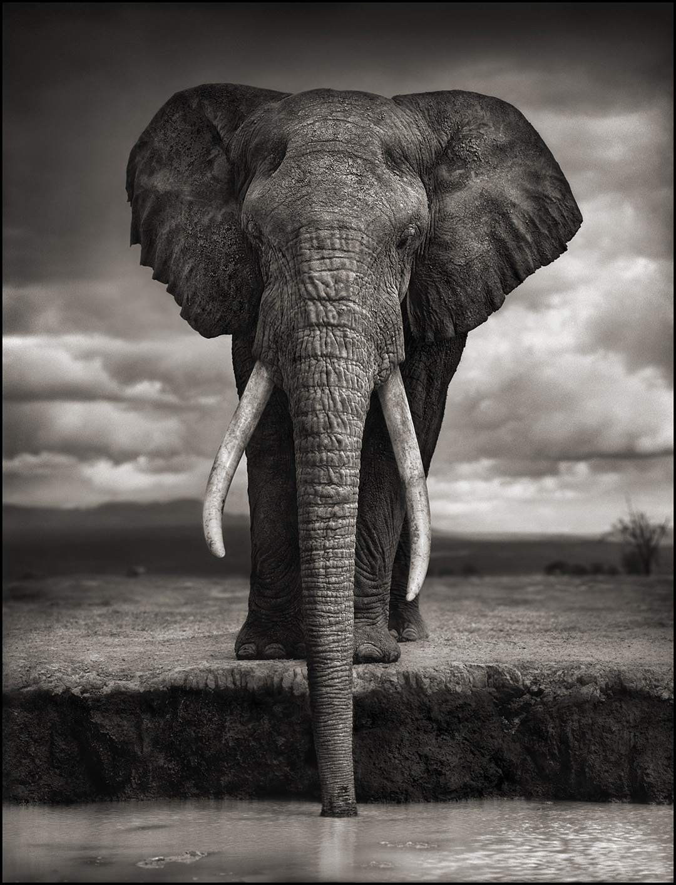
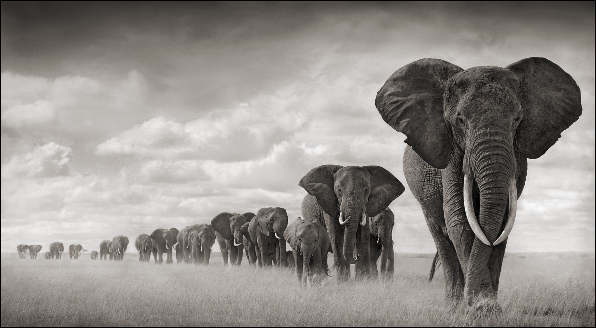
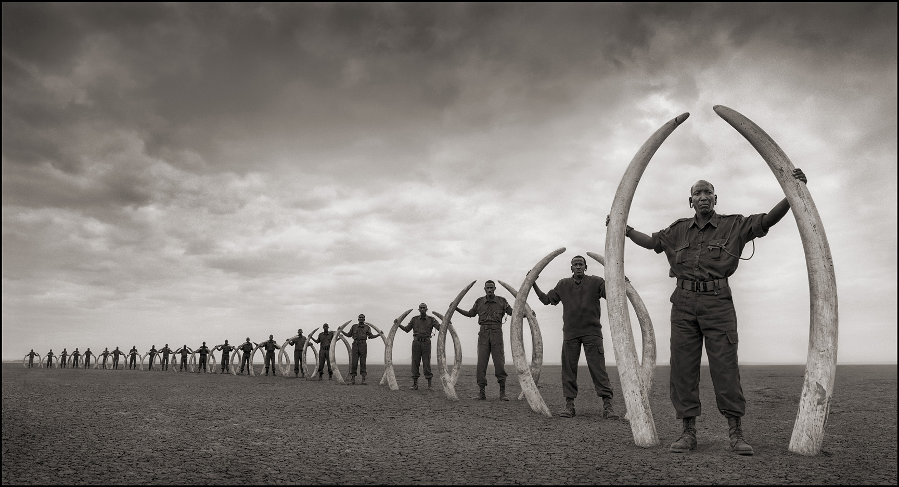

June, 2019
Big Life Foundation
Press secretary at Animat Habitat
This all began in summer of 2010 — this was a university term project at the time, and with only a distant connection to Amboseli National Park. The Greater Amboseli ecosystem is a two million-acre area basking in the shadow of Mount Kilimanjaro, bordering southern Kenya and northern Tanzania. Amboseli is one of the richest wildlife areas that remain in Africa. The only connection with this project was a photograph. This is that photograph: this portrait of an elephant was applied as the front orthographic image plane in the making of a three-dimension computer-generated model elephant, for example, for this project.
In July 2010, entirely coincidentally, wildlife photographer Nick Brandt had returned to Amboseli. In much of the previous decade, he had spent many months following the elephants there and, as a result, had the opportunity to come to know some of them intimately. This was one of those elephants: the image is simply striking. So much so that this image reference for Ella was immediately identified when a story of a pioneering conservation group, co-founded by a photographer inspired by wildlife in East Africa, featured photography of a similarly striking style. The name of this elephant was Igor. He lived largely in Amboseli. This photograph was taken in 2007 and indeed the photographer was the very same — the one and only Nick Brandt, now co-founder of Big Life Foundation. (This iconic image of Igor is a big part of the visual identity of Big Life Foundation.) The one and only Igor was killed by poachers for his ivory in 2009, two years after this photograph was taken. He was 49 years of age. [1] This project was not yet begun.

“Elephant Drinking” Amboseli, 2007 (Killed by poachers, 2009) © Nick Brandt [nickbrandt.com]
Big Life, Kenya
The way in which the photography of Nick Brandt has inspired the art of White Elephant is a microcosm of the way in which the wilderness in East Africa has inspired the work of Big Life Foundation. Co-founded in 2010 by photographer Nick Brandt, conservationist Richard Bonham, and entrepreneur Tom Hill — Big Life is on the ground in East Africa, partnering with local communities to protect nature for the benefit of all. For almost a decade, Big Life has collaborated with local communities, partner NGOs, national parks and government agencies to protect over 1.6 million acres of wild lands from deforestation and overgrazing and so on, to sustain the rich wildlife in the Greater Amboseli ecosystem, including one of the last great populations of savanna elephants in Africa.
In order to protect these elephants, Big Life has become the first organization to establish coordinated anti-poaching operations on both sides of the Kenya-Tanzania border. This has laid groundwork for a two-part land management plan, securing the remaining wild habitat areas in the Amboseli ecosystem and working with local communities to protect that land. The first part negotiates annual leases to hundreds of owners of 60-acre parcels of land located in the Kimana Corridor. These lease payments are intended to limit destructive development of the land, other than that which is compatible with conservation and pastoralism. The second involves working with local communities to protect strategically important wildlife corridors as well as valuable grazing lands to the local livestock economy. This protection can be achieved through the establishment of conservancies, with income-generating opportunities such as tourism. This partnership has pioneered the dangerous game of wildlife protection at Big Life. [2]
Big Life has demonstrated that sustainable conservation can be achieved through a community-based collaborative approach. Big Life Foundation, by its example, has established a holistic conservation model in the Amboseli-Tsavo-Kilimanjaro ecosystem that can be replicated across the African continent.
“We believe that if conservation supports the people, then people will support conservation.” — Vision statement, Big Life Foundation
Big Life in Action, 2014 © Big Life Foundation
Warning: video includes graphic footage, as well as great footage and great people doing great work.
This six-minute short film from Big Life Foundation documents the poaching crisis in East Africa in the early 2010s, and the action that Big Life is taking to manage on the ground. The film features wildlife footage shot in Amboseli in July 2012 by Nick Brandt, and interviews from earlier in the year with Richard Bonham, as he and his teams pursue poachers within the Amboseli ecosystem.
“All across the African continent, there are entire populations of elephants and other animals now being wiped out. The list is long: animal populations in Chad, Central African Republic, Mozambique, Congo, large parts of Tanzania, and on and on. Tragically for many of the ecosystems in these places, any conservation group would face an overwhelming struggle to be effective — for lack of government support or community collaboration, for lack of money, for lack of firepower against the rebel militia groups that sweep in to murder en masse, financing weapons purchases with their bloody bounties of ivory.” — Nick Brandt, Across the Ravaged Land (2013), 10. Big Life Foundation
Anti-poaching was the first program when Big Life was established and continues to be the primary focus for the organization: to stop illegal wildlife crimes and arrest poachers. Poaching continues to pose a significant threat, however many elephants face an even bigger challenge: conflict with humans.
Human-Elephant Conflict
Imagine that you are an African farmer who earns maybe a few thousand dollars in a year from your crops and you discover a big bull elephant trampling through, destroying your very livelihood in just one night. You might be very tempted to throw that spear that protects your ability to feed your family. This is why Big Life has patrol vehicles out every night, patrolling the land where farmland meets wildlife habitat. Big Life also supplies thunder flashes (harmless noisy pyrotechnic deterrents) to farmers, helping them prevent an attack and protect their crops. And Big Life has seen success: crop raiding has declined, though not by enough. Even on a continent the size of Africa, every day, humans and wild animals are competing for space as farmland and development encroach further upon the wild places.
Settlers have planted crops on ancient migratory routes, and staked their livelihood on what used to be prime elephant habitat. From the perspective of the settlers, the elephants run rampant: eating their way through maze fields, knocking down houses, and trampling on people. From the perspective of the elephants, the settlers are in the way: turning migratory routes and elephant habitat into farmlands that either block passage or come close enough to naturally entice the elephants to forage. As humans expand relentlessly into what was once wilderness, there is ever-more likelihood of conflict with wildlife.

“Elephants Walking Through Grass” Amboseli, 2008 (Leading matriarch killed by poachers, 2009) © Nick Brandt [nickbrandt.com]
Elephant-Human Conflict
Imagine that you are an African elephant who walks maybe a few hundred miles along parched stream beds to water and grassland, and along the way you come across a maze field. You remember that your family has walked this way for generations, and maybe you remember that this maze field was not a maze field not that long ago. The landscape has changed: the maze is here now. The maze smells ripe now. This field is the sweetest thing that you have smelled for miles. You are dehydrated and starved, and you feast on the food in front of you and – for a moment – all is well. All of a sudden, shrieks! Thunder flashes follow. Worse: gunshots. Creatures with spears that slither in the dark. The kind of creatures that have killed elephants before, maybe elephants who you once knew. You run rampant. You are a wild elephant.
Increasing human-wildlife conflict in the ecosystem is a direct result of wildlife and local communities competing for limited resources on the same shrinking land areas.
There are no winners of this conflict. Everyone loses.
Wildlife Corridors
Elephants like vanilla, and do not like bees. This is a relationship with forest habitats, and an evolved mechanism that helps to protect certain trees. [3] Elephant conservationists have worked with farmers to apply this knowledge in East Africa. Vanilla is used to encourage Elephants to follow new routes and to use manmade wildlife corridors. Bees are used to detract Elephants from raiding maze fields and farmlands. Elephant conservationists have used this natural fear to benefit the elephants by placing beehives near farms in order to prevent elephants from foraging in those areas. [4] This approach seems to be helping to minimize incidents of human-elephant conflict.
These are two wonderful examples of measures taken to manage the effects of human expansion on elephant habitat. Big Life continues to focus on innovative conservation solutions, continues to establish rapid-response units dedicated to move elephants away from farmlands, and continues to invest in crop-protection fences to deter elephants from entering farmed areas in the first place.
The big picture at Big Life is about protecting the right areas: wildlife corridors. [5]
“Amboseli owes its panoply of wildlife to a tapestry of habitats, from glaciers to alpine meadows forests, woodlands, arid bush, grasslands, swamps, seasonal lakes, lava flows and windswept barren flats flanked by high mountains. To the south the 19,600 feet Kilimanjaro towers over the lowland plains of Amboseli. To the east the young volcanic range of the Chyulus reaches into Tsavo West National Park. To the north rise a series of ever darker and more distant hills stretching to the Kenya highlands.” — Dr. David (Jonah) Western, founder of the African Conservation Center

“Line of Rangers with Tusks of Killed Elephants” Amboseli, 2011 © Nick Brandt [nickbrandt.com]
Across The Ravaged Land
The photography of Nick Brandt from his time in Amboseli speaks for itself, with each portrait speaking of a character in a story with an ending that gave life to Big Life Foundation. These photographs are collected in a trilogy of books documenting the disappearing animals of East Africa, altogether titled: On This Earth, A Shadow Falls Across The Ravaged Land. In the third and final volume, Nick returned to Amboseli for the first time in two years. This time, when he approached, Nick wrote in an essay on conservation, “what had once been some of the most relaxed of elephant herds […] they would run in terrified panic.” This essay introduced the final volume of his trilogy: Across The Ravaged Land, and his words speak to the foundation of Big Life:
“Day by day, we tried to approach what had once been some of the most relaxed of elephant herds, elephants that in the past had quietly made their daily journey to the swamps, moving past and around our vehicle without a care in the world. But this time, when we approached to within half a mile, they would run in terrified panic. Meanwhile, gunshots were being reported from the direction that the elephants came, near the Tanzanian border.”
“We tried reporting what we'd seen, but nothing was done, nothing happened. The Kenya Wildlife Service was (and still is) underfunded, and the few NGOs in the area had insufficient funds and infrastructure to make much of a difference. On the Tanzanian side, there was no one at all engaged in protection or conservation.”
“Over the next couple of months, the roll call of big bull elephants killed by poachers came thick and fast[…]. It wasn't just a case of if a big-tusked elephant was going to get killed, but when.”
“I saw the destruction unfolding with almost no real or meaningful protection[…]. It’s no good being angry and passive. It’s much better to be angry and active.” [6]
Since its foundation in 2010, Big Life has pioneered wildlife conservation on the ground and in publication. Big Life in Kenya (and Tanzania) has a network of community rangers, mostly Maasai — the heart of conservation in this region is a partnership with the Maasai, who are traditionally a pastoralist society — Big Life community rangers actively protect the land by fighting against habitat destruction such as illegal logging or charcoaling, and are expertly trained to tackle a variety of wildlife crimes. Big Life in Canada, in the US and in the UK (and around the world) has campaigned in support of wildlife in East Africa with a story of success based on the strength of partnerships with local communities and embodied in the striking photography of co-founder Nick Brandt.
We recognize the partnership of Big Life Foundation with local communities in East Africa as a leading example for elephant conservation at a time when elephant conservation across the continent has appeared most bleak. Animat Habitat has named Big Life Foundation as an official selection to receive a percentage of revenue from this project, scene one: White Elephant. This is part of our mission to support wildlife conservation projects on the ground in Africa.
See more ways to support Big Life Foundation featuring Nick Brandt prints for Big Life.
For more about the history of Big Life and the future of communities participating in the protection and preservation of wildlife and wild lands in Kenya and Tanzania, see: biglife.org.
1 Brandt, N. His name was Igor. 2018. Website Link
2 Big Life's new digital chess board. 2019. Website Link
3 Dupuis-Désormeaux, M., Macdonald, S. Converging evidence for vanilla as an elephant attractant. 2012. Download PDF
4 King, L. Elephants and bees project. 2019. Website Link
5 Threading elephants through the eye of a needle. 2019. Website Link
6 Brandt, N. Across The Ravaged Land. 2013. Download PDF